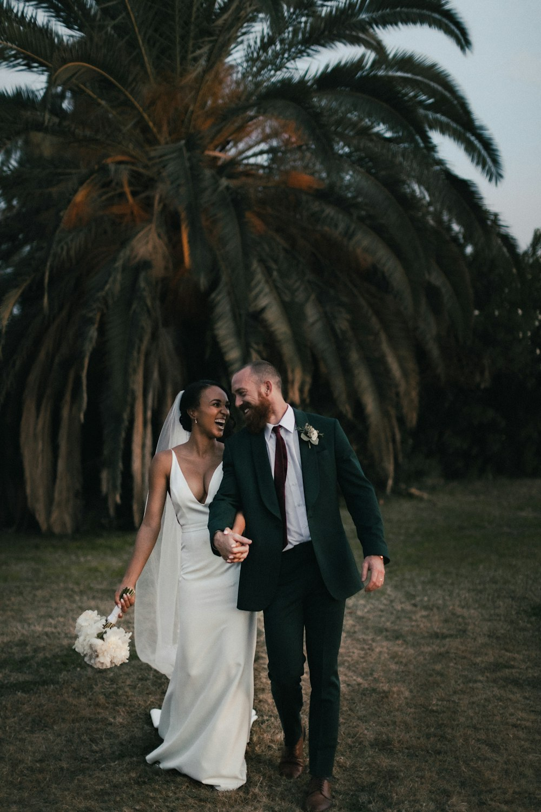
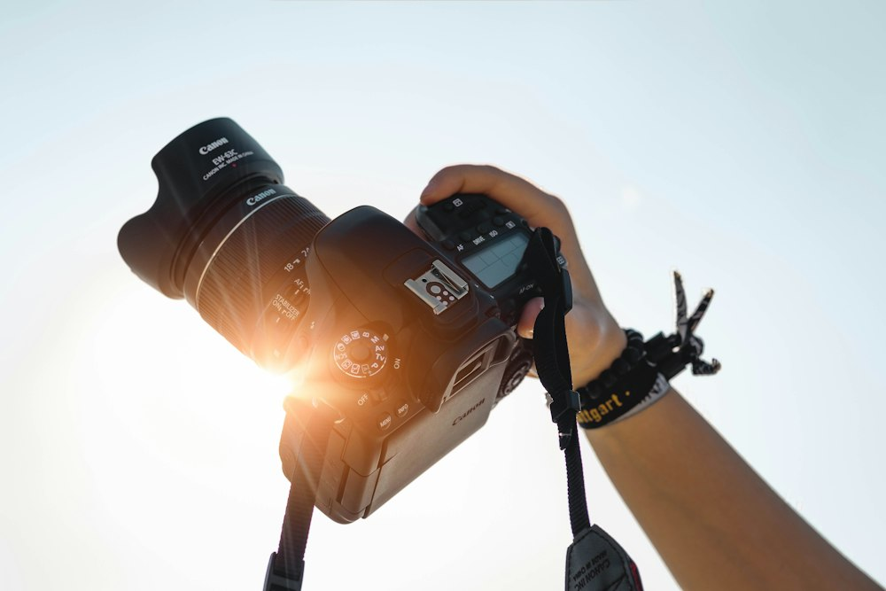
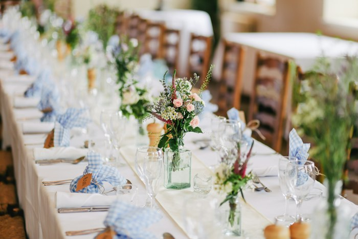
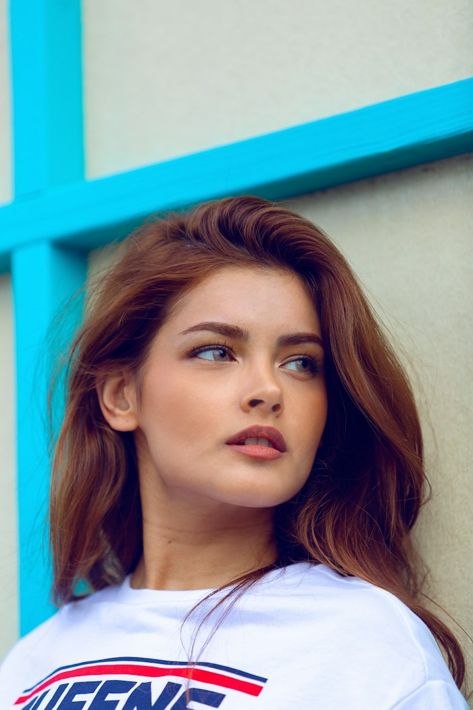
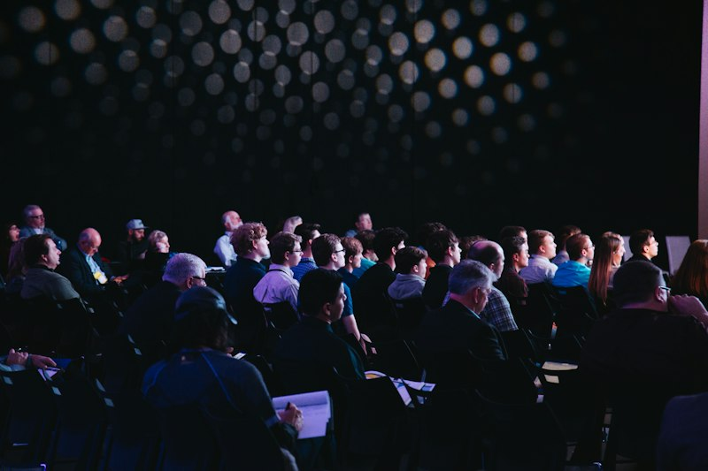

01
Свадьба в городе
Симферополь — регистрация и прогулка
Симферополь · Крым
Aperture
Спокойный стиль, живые эмоции и аккуратная работа со светом — для важных дней в городе и по всему Крыму.
Свадьбы, портреты и живые моменты из съёмок в Симферополе и по Крыму.
Все съёмки →

Меня зовут Алекс, я фотограф студии Aperture. Снимаю свадьбы, предложения, love story, портреты и просто красивые моменты — помогаю сохранить день таким, каким он ощущался, без лишней постановки и суеты.
Основные локации — Симферополь, Севастополь, ЮБК и уютные дворы старого города. Можно выбрать студию, улицу или природу.
Не только свадьба: предложение, прогулки, портреты и живые события — всё, что хочется сохранить.


Скрытая или открытая съёмка момента «да» — чтобы кадры остались навсегда.
Смотреть цены →

Семейные кадры, дни рождения и простые красивые мгновения обычной жизни.
Смотреть цены →